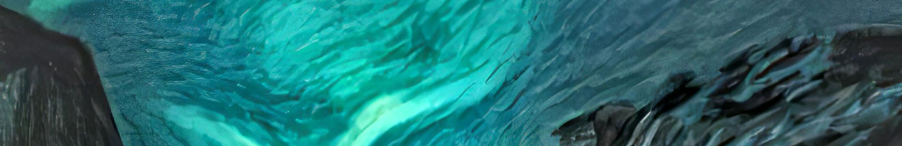

Software Architect. Founder. Traveler.Greetings fellow humans! I'm Jacob, a human who does stuff.
Based in Berlin, Germany, and raised in the United States, I am a Software Architect specializing in Web3 & Blockchain Technologies, working as the Founder & CEO of early-stage startup Anomaly Science, developing a tokenized solution for software licensing, and web3 developer tools. I love travel and commercial aviation, frequently traveling around Europe, with regular visits to North America. I enjoy sandbox games, with Minecraft and No Man’s Sky being my favorites, and I really love Indie music, with Arcade Fire being my favorite band by far.